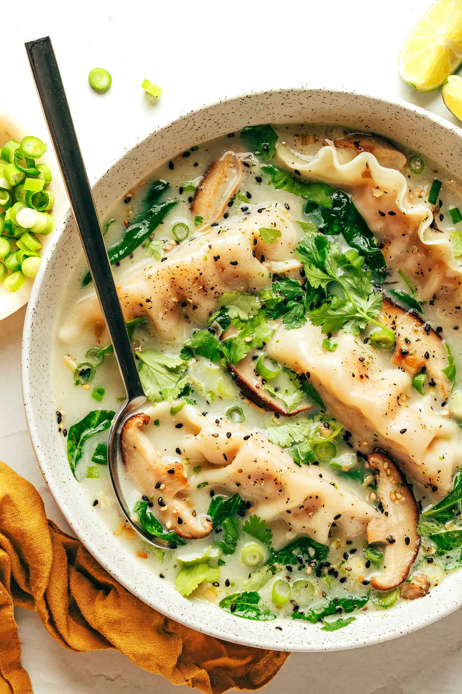

.
COCONUT POTSTICKER SOUP

Frozen potstickers
Mushrooms
Scallions
Spinach
Garlic and ginger
Lemongrass (optional)
Vegetable broth
Coconut milk
Lime
Toppings
Sauté.
Heat 1 tablespoon of oil in a large stockpot over medium-high heat. Add the mushrooms and sauté, stirring occasionally, until browned. Add the remaining 1 tablespoon oil, garlic, ginger and lemongrass. Sauté for 1-2 more minutes, stirring occasionally, until fragrant.
Simmer.
Add the vegetable broth and stir to combine. Continue heating until the broth reaches a boil. Add the frozen potstickers, half of the scallions and stir to combine. Cook for 2 minutes. Stir in the coconut milk, spinach, lime juice, and a few twists of freshly-ground black pepper. Cook until the potstickers are cooked and the spinach has wilted. Taste and season with salt and pepper as needed.
Serve.
immediately, generously garnished with the remaining scallions and any extra toppings that sound good.